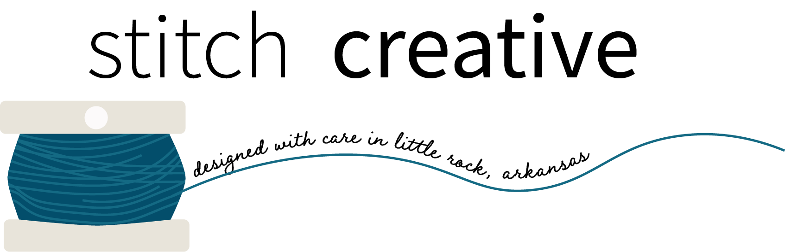
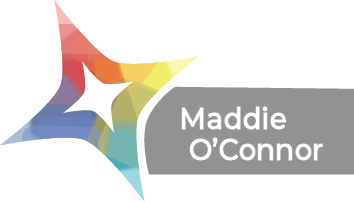
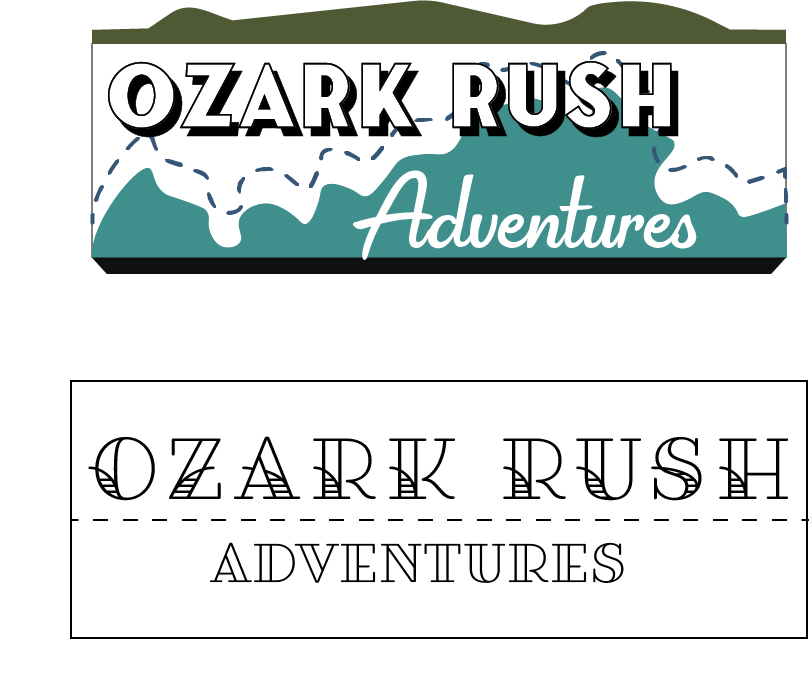
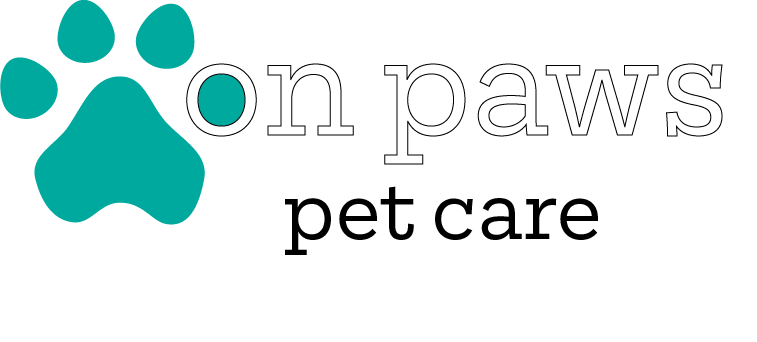

Logo design for a fictional art and design firm, based on my own fiber-art interests.  My take on the star tutorial, created in Illustrator instead of Gravit. I enjoyed playing around with filters and blend modes as well as clipping masks, all three things that don't normally make it into my workflow. Unused logo options for our team project that I designed that didn't make the cut when we looked at them as a group. Ultimately we liked them both but neither fit the mood as well as the final design by Kalyn. The top option was a lot of fun to work on, though- I actually traced parts of the maps provided by our clients to create the mountain/river shapes in the logo. However, a single color logo like the bottom one and the logo option that was ultimately chosen provides much more versatility for the client than my more complex design.Pet care company logo for my final Mobile Web project this spring. I wanted something kind of playful, and will take any opportunity to use a slab serif.